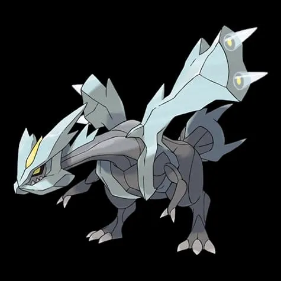
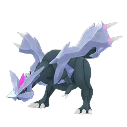

🧭 Quick Navigation
📖 Introduction
Kyurem is a legendary Pokémon from the Unova region and is known as the Boundary Pokémon. In Pokémon GO, Kyurem appears as a powerful five-star raid boss that requires strong counters and teamwork to defeat.
As a Dragon and Ice-type Pokémon, it is vulnerable to multiple powerful counters, making it a challenging but manageable raid with the right team.
With its Dragon and Ice typing, Kyurem can deal heavy damage using powerful moves such as Blizzard and Dragon-type attacks. However, it also has several important weaknesses that trainers can use to their advantage.
This raid guide will help trainers understand Kyurem’s strengths and weaknesses, choose the best Pokémon counters, and learn effective battle strategies. Whether you are raiding with a small group of experienced trainers or a larger team, this guide will help you defeat Kyurem and increase your chances of catching it afterward.
Related guides: Primal Kyogre | Lugia
💡 Expert Insight
Kyurem combines Dragon and Ice typing, giving it strong offensive coverage but also multiple exploitable weaknesses. Its vulnerability to Fighting, Rock, Steel, and Dragon types offers flexible counter strategies.
Steel-type Pokémon provide excellent survivability while maintaining solid damage output in this raid.
📊 Kyurem Stats
| Type | Dragon / Ice |
| Max CP | 4041 |
| Weather Boost | Windy, Snowy |
| Shiny | Yes |
| Base Attack | 246 |
| Base Defence | 180 |
| Base Stamina | 255 |
Kyurem has high attack, so dodging charged moves is important.
🎯 Catch CP & 100% IV
CP Range:
- No Weather Boost: 1,957-2,042 CP
- Weather Boost: 2,446-2,553 CP
100% IV:
- 2042 (Normal)
- 2553 (Weather Boosted)
Use:
- Golden Razz Berry
- Curveball Excellent Throws
⚠️ Kyurem Weaknesses
Key: Dragon moves are risky because Kyurem also has Dragon attacks.
| Category | Details |
|---|---|
| ❌ Weak to |
 Fighting • Fighting •
 Rock • Rock •
 Steel • Steel •
 Dragon • Dragon •
 Fairy Fairy
|
| ✅ Resists to |
 Water • Water •
 Grass • Grass •
 Electric Electric
|
Notes: Avoid using Ice-type Pokémon since Kyurem will resist their attacks.
🗡️ Best Kyurem Counters
Kyurem is weak to Fighting, Rock, Steel, Dragon, and Fairy-type attacks. Top counters include strong Steel and Fighting-type Pokémon, which provide both high damage and survivability.
⚙️ Steel-Type Counters (High Durability)
Steel-type attackers deal super-effective damage while resisting Kyurem’s Ice-type moves. They provide excellent survivability and reduce relobby time.
- Dialga: (Metal Claw)
- Metagross: (Bullet Punch / Meteor Mash)
Extremely high DPS
🪨 Rock-Type Counters (Great vs Ice Moves)
Rock-type Pokémon deal super-effective damage and resist Ice-type attacks. They are excellent if Kyurem is using Blizzard or other Ice moves.
🥊 Fighting-Type Counters (Top Balanced Option)
Fighting-type Pokémon are among the most reliable counters. They deal super-effective damage and can perform consistently even when Kyurem uses Dragon-type moves.
- Fast move: Counter
- Charged moves: Dynamic Punch or Aura Sphere
- Mega Fighting Pokémon boost team-wide Fighting damage
- Conkeldurr: (Counter / Dynamic Punch)
- Terrakion: (Double Kick / Sacred Sword)
Very high attack stat
Legendary Fighting attackers
🐉 Dragon-Type Counters (High Risk, High Reward)
Dragon-type Pokémon deal super-effective damage but are vulnerable to Kyurem’s Dragon moves. Use them for fast clears if your team has strong coordination and high-level attackers.
- Dialga: (Draco Meteor)
- Palkia: (Dragon Tail / Draco Meteor)
One of the highest Dragon-type DPS Pokémon
Excellent for short-man raids
Raid Difficulty
Kyurem is a moderately difficult Tier 5 raid. It can be defeated by 3–4 high-level trainers with optimal counters, but most players should aim for 4–6 trainers for a safe victory.
🏆 Best Regular Counters
Regular pokemon that amplify the right types give you a powerful edge. Below are top Regular counters with short notes on why they excel.
| Pokémon | 🗡️ Fast Moves | 💥 Charged Moves | 🔄 Elite Moves | 🏆 Best Moves | 🧪 Why This Counter Works |
|---|---|---|---|---|---|
| Zacian | Metal Claw / Air Slash | Play Rough / Close Combat / Giga Impact / Behemoth Blade | None | Metal Claw and Behemoth Blade | Fairy typing allows it to deal super-effective damage to Kyurem’s Dragon side, while Steel coverage like Metal Claw adds additional pressure. |
| Black Kyurem | Shadow Claw / Dragon Tail | Stone Edge / Blizzard / Iron Head / Outrage / Fusion Bolt / Freeze Shock | None | Dragon Tail and Freeze Shock | Extremely high attack stat combined with powerful Dragon-type moves like Freeze Shock allows massive super-effective damage output. |
| Keldeo(Original) | Low Kick / Poison Jab | Close Combat / Sacred Sword / X-Scissor / Aqua Jet / Hydro Pump | None | Low Kick and Sacred Sword | Fighting-type moves like Sacred Sword hit Kyurem’s Ice typing super effectively while maintaining solid raid DPS. |
| Origin Dialga | Dragon Breath / Metal Claw | Iron Head / Thunder / Draco Meteor | Roar of Time | Dragon Breath / Metal Claw and Roar of Time | Steel typing resists Ice moves and Dragon attacks while delivering strong Steel or Dragon-type super-effective damage. |
| Zamazenta | Metal Claw / Ice Fang | Moon Blast / Close Combat / Giga Impact / Behemoth Bash | None | Metal Claw and Behemoth Bash | Steel and Fighting coverage allow it to exploit Kyurem’s Ice weakness while offering good bulk. |
| Dusk Mane Necrozma | Shadow Claw / Metal Claw / Psycho Cut | Dark Pulse / Iron Head / Future Sight / Outrage / Sunsteel Strike | None | Metal Claw and Sunsteel Strike | Steel typing resists Ice moves and Sunsteel Strike deals consistent super-effective Steel damage. |
| Terrakion | Double Kick / Smack Down / Zen Headbutt | Close Combat / Earthquake / Rock Slide | Sacred Sword | Double Kick and Sacred Sword | Fighting and Rock coverage both hit Kyurem super effectively, making it one of the most efficient balanced counters. |
| Origin Palkia | Dragon Breath / Dragon Tail | Hydro Pump / Fire Blast / Aqua Tail / Draco Meteor | None | Dragon Tail and Draco Meteor | Dragon-type moves deal strong super-effective damage, though it must watch out for Dragon-type charged attacks. |
| Eternatus | Poison Jab / Dragon Tail | Flamethrower / Dragon Pulse / Sludge Bomb | Dynamax Cannon | Dragon Tail and Dynamax Cannon | High base stats allow strong neutral Dragon-type damage, though it lacks Steel or Fighting super-effective coverage. |
| Metagross | Fury Cutter / Bullet Punch / Zen Headbutt | Earthquake / Flash Cannon / Psychic | Shadow Claw / Meteor Mash | Bullet Punch and Meteor Mash | Bullet Punch and Meteor Mash provide top-tier Steel-type DPS while resisting Kyurem’s Ice attacks. |
| Keldeo(Resolute) | Low Kick / Poison Jab | Close Combat / Sacred Sword / X-Scissor / Aqua Jet / Hydro Pump | None | Low Kick and Sacred Sword | Fighting-type Sacred Sword provides reliable super-effective damage against Kyurem’s Ice typing. |
| Primal Groudon | Mud Shot / Dragon Tail | Earthquake / Fire Blast / Solar Beam | Precipice Blades / Fire Punch | Mud Shot and Precipice Blades | Provides strong neutral damage and team-wide Primal boost, but does not directly exploit Kyurem’s primary weaknesses. |
| Lucario | Counter / Bullet Punch | Close Combat / Power-Up Punch / Aura Sphere / Shadow Ball / Flash Cannon / Meteor Mash / Blaze Kick / Thunder Punch | Force Palm | Counter and Close Combat | Steel typing resists Ice moves while Counter and Aura Sphere deliver powerful super-effective Fighting damage. |
| Dialga | Metal Claw / Dragon Breath | Iron Head / Thunder / Draco Meteor | None | Dragon Breath and Draco Meteor | Steel typing reduces incoming Ice damage while Dragon or Steel moves hit Kyurem super effectively. |
👤 Best Shadow Counters
Shadow pokemon that amplify the right types give you a powerful edge. Below are top Shadow counters with short notes on why they excel.
| Pokémon | 🗡️ Fast Moves | 💥 Charged Moves | 🔄 Elite Moves | 🏆 Best Moves | 🧪 Why This Counter Works |
|---|---|---|---|---|---|
| Shadow Metagross | Fury Cutter / Bullet Punch / Zen Headbutt | Earthquake / Flash Cannon / Psychic | Shadow Claw / Meteor Mash | Zen Headbutt and Earthquake | Shadow bonus increases Meteor Mash damage, making it one of the best Steel-type raid attackers available. |
| Shadow Palkia | Dragon Breath / Dragon Tail | Fire Blast / Hydro Pump / Aqua Tail / Draco Meteor | None | Dragon Tail and Draco Meteor | Shadow boost enhances Dragon-type DPS for faster clears, though it remains vulnerable to Dragon moves. |
| Shadow Conkeldurr | Counter / Poison Jab | Dynamic Punch / Focus Blast / Stone Edge | Brutal Swing | Counter / Poison Jab and Focus Blast | Shadow-boosted Counter and Dynamic Punch deliver extremely high Fighting-type super-effective damage. |
| Shadow Blaziken | Counter / Fire Spin / Ember | Focus Blast / Aura Sphere / Brave Bird / Overheat / Blaze Kick | Stone Edge / Blast Burn | Counter / Fire Spin and Overheat | Shadow Fighting moves provide strong super-effective damage, though Fire typing does not resist Ice. |
| Shadow Dialga | Metal Claw / Dragon Breath | Iron Head / Thunder / Draco Meteor | None | Metal Claw / Dragon Breath and Draco Meteor | Shadow boost increases Dragon or Steel DPS while Steel typing reduces Ice-type damage taken. |
⚡ Best Mega Counters
Mega pokemon that amplify the right types give you a powerful edge. Below are top Mega counters with short notes on why they excel.
| Pokémon | 🗡️ Fast Moves | 💥 Charged Moves | 🔄 Elite Moves | 🏆 Best Moves | 🧪 Why This Counter Works |
|---|---|---|---|---|---|
| Mega Lucario | Counter / Bullet Punch | Close Combat / Power-Up Punch / Aura Sphere / Shadow Ball / Flash Cannon / Meteor Mash / Blaze Kick / Thunder Punch | Force Palm | Counter and Close Combat | Mega boost strengthens all Fighting and Steel teammates while delivering extremely high super-effective DPS itself. |
| Mega Diancie | Tackle / Rock Throw | Rock Slide / Power Gem / Moonblast | None | Rock Throw and Moonblast | Rock typing deals super-effective damage while Mega boost enhances team Rock attackers. |
| Mega Rayquaza | Air Slash / Dragon Tail | Aerial Ace / Dragon Ascent / Ancient Power / Outrage | Hurricane / Breaking Swipe | Dragon Tail and Outrage | Extremely high Dragon-type DPS enables fast clears, though it remains vulnerable to Dragon attacks. |
| Mega Latias | Zen Headbutt / Dragon Breath / Charm | Aura Sphere / Thunder / Psychic / Outrage | Mist Ball | Dragon Breath and Outrage | Provides Dragon-type team boost while offering more bulk than other Dragon attackers. |
| Mega Latios | Zen Headbutt / Dragon Breath | Aura Sphere / Solar Beam / Psychic / Dragon Claw | Luster Purge | Dragon Breath and Dragon Claw | High Dragon DPS combined with Mega boost makes it excellent for coordinated raid teams. |
| Mega Blaziken | Counter / Fire Spin / Ember | Focus Blast / Aura Sphere / Brave Bird / Overheat / Blaze Kick | Stone Edge / Blast Burn | Counter / Fire Spin and Overheat | Mega boost strengthens Fighting attackers while Counter delivers super-effective damage. |
| Mega Gardevoir | Magical Leaf / Charge Beam / Confusion / Charm | Shadow Ball / Psychic / Triple Axel / Dazzling Gleam | Synchronoise | Charm and Dazzling Gleam | Fairy typing deals super-effective damage to Kyurem’s Dragon side while boosting Fairy teammates. |
| Mega Garchomp | Mud Shot / Dragon Tail | Earthquake / Sand Tomb / Fire Blast / Outrage / Breaking Swipe | Earth Power | Dragon Tail and Outrage | Dragon-type moves deal heavy super-effective damage while providing team-wide Dragon boost. |
| Mega Tyranitar | Iron Tail / Dragon Breath / Bite | Stone Edge / Fire Blast / Crunch / Brutal Swing | Smack Down | Smack Down and Stone Edge | Rock typing exploits Kyurem’s Ice weakness while boosting Rock teammates for higher total DPS. |
| Mega Heracross | Counter / Struggle Bug | Close Combat / Upper Hand / Earthquake / Rock Blast / Megahorn | None | Counter and Close Combat | Mega Fighting boost amplifies team damage while delivering strong Counter-based super-effective attacks. |
| Mega Metagross | Fury Cutter / Bullet Punch / Zen Headbutt | Earthquake / Flash Cannon / Psychic | Shadow Claw / Meteor Mash | Bullet Punch and Meteor Mash | One of the best Steel attackers, resisting Ice while delivering massive Meteor Mash damage. |
💊 Revive & Potion Cost
- Average revives used: 8–14
- Average potions used: 10–18
- Dodging significantly reduces resource usage
- Using Mega Pokémon reduces total relobbies
Strategy Guide
Steel and Fighting-type Pokémon are the safest counters against Kyurem because they resist its Ice-type attacks. Dragon-types can deal high damage but are risky due to Kyurem’s Dragon-type moves. Using Mega Evolution boosts will significantly increase team damage and reduce battle time.
❌ Common Raid Mistakes
- Using Dragon-types without considering Kyurem’s Dragon moves
- Using Water, Grass, or Electric Pokémon (resisted)
- Attempting with too few trainers
🧩 Best Team Compositions
- Lead with strongest Fighting-type attacker
- Add 1–2 Rock-type Pokémon
- Include 1 Steel-type for durability
- Use Dragon attackers for high DPS finish
Maintaining consistent super-effective damage while minimizing relobby time ensures a smooth victory.
⚡ High DPS Team (Small Groups)
- Mega Rayquaza - Mega boost increases Dragon damage for the whole team
- Mega Garchomp
- Dialga (Metal Claw + Iron Head)
- Rayquaza
- Salamence
- Palkia
🛡 Balanced Team (Safer Clear)
- Dialga (Metal Claw + Iron Head)
- Metagross (Bullet Punch + Meteor Mash) - Meteor Mash is one of the best moves in Pokémon GO
- Lucario (Counter + Aura Sphere) - Fighting hits Kyurem super effectively
- Terrakion (Double Kick + Sacred Sword) - Legendary Fighting attackers
- Togekiss
- Garchomp
👥 Raid Difficulty & Trainers Needed
Kyurem is less bulky than some other legendary raid bosses, making it manageable with smaller groups.
- 2–3 Trainers: Possible with optimized counters
- 4 Trainers: Comfortable clear
- 5+ Trainers: Very safe win
🧠 Raid Strategy & Advanced Tips
1. Adjust Based on Moveset
If Kyurem has Blizzard, prioritize Steel or Rock counters for better survivability. If it uses Dragon-type charged moves, mix in Fighting or Steel Pokémon for stability.
2. Balance DPS and Bulk
While Dragon attackers can shorten raid time, a balanced team including Fighting and Steel types reduces fainting and relobby delays.
3. Coordinate Mega Evolutions
Mega Fighting, Mega Steel, or Mega Rock Pokémon can significantly increase overall damage output. Coordinate activation with your group for maximum efficiency.
Kyurem’s Ice and Dragon dual-typing means it has several important weaknesses — notably to Rock, Dragon, Fairy, Steel, and Fighting-type attacks. Pokémon such as Tyranitar with Smack Down and Stone Edge, Metagross with Bullet Punch and Meteor Mash, and Garchomp with Dragon Tail and Outrage are excellent choices because they hit Kyurem’s weaknesses while also resisting many of its moves. Fairy counters like Togekiss or Gardevoir help cover the Dragon side of Kyurem’s typing and offer better durability against charged attacks.
Weather conditions play an important role in this raid. In Snowy weather, Ice moves — including some of Kyurem’s own attacks — may be stronger, but Rock, Dragon, and Steel typing also benefit under certain conditions like Partly Cloudy or Windy weather. Trainers should always check the in-game weather before selecting their team, as boosted attacks from weather can significantly increase your overall damage per second (DPS).
Kyurem’s charged moves such as Ice Beam and Draco Meteor hit hard and can quickly wear down your counters if they’re not resistant or bulky enough. Learning when to dodge — especially heavy charged attacks — can improve your team’s survivability and allow your strongest counters to stay active longer. In smaller raid groups, strategic dodging becomes even more important, as every HP matters.
When building your raid party, lead with your highest DPS counters that exploit Kyurem’s weaknesses. Once those Pokémon start to fall, rotate in secondary attackers that still deal super-effective damage but offer greater bulk. In larger lobbies, coordinating roles — such as starting with Rock and Steel counters followed by Fairy and Dragon types — helps streamline the battle and maintain a high pace of damage across the raid timer.
If you have powerful Mega Evolutions that support your primary counter types (such as Mega Aggron for Steel coverage or Mega Gardevoir for Fairy support), consider using them early to empower your team. Proper team sequencing and weather-aware planning give you the best shot at a fast and clean Kyurem raid clear.
🌦️ Weather Boost Effects
☁️ Cloudy Weather
- Boosts Fighting & Fairy counters
🌨️ Snowy Weather
- Boosts Kyurem’s Ice-type moves (makes raid harder)
⛅ Partly Cloudy Weather
- Boosts Rock counters
🌬️ Windy Weather
- Boosts Dragon attackers
🌀 Kyurem Moveset
🗡️ Fast Moves
- Steel Wing
- Dragon Breath
💥 Charged Moves
- Dragon Claw
- Blizzard
- Draco Meteor
🔄 Elite Moves
- Glaciate
Pro tip: Blizzard is the most dangerous charged move. Steel-types perform best when Blizzard is present.
Moves to Dodge
- Outrage (Dragon-type, very high damage)
- Blizzard (Ice-type, fast charge)
🎮 Is Kyurem Good in PvE and PvP?
PvE (Raids)
Kyurem is very strong in raids due to high attack, but battles last long because of high HP.
PvP
Kyurem is situationally strong in PvP Ultra League or Master League, but less common than Giratina or Dragonite.
✨ Can Kyurem Be Shiny in Pokémon GO?
Yes, trainers have a chance to encounter Shiny Kyurem after defeating Kyurem in a raid battle. Shiny Kyurem has a slightly different color appearance compared to its normal form, making it a valuable addition for collectors and shiny hunters.
Shiny Kyurem maintains the same battle strength and stats as the regular version, but its unique appearance makes it highly sought after by many players in Pokémon GO.
Participating in multiple Kyurem raids will increase your chances of encountering a shiny version, so trainers often complete several raids during Kyurem raid rotations.
🚶 Buddy Distance
20 km (per Pokémon GO buddy distance)
⚖️ Shadow & Mega Comparison
🧬 Best Mega Evolutions
Recommended Megas to use against Kyurem:
- Lucario, Blaziken, Heracross, Latias, Latios – 🥊 Fighting boost
- Metagross – ⚙️ Steel boost
- Rayquaza, Latios, Latias, Garchomp – 🐉 Dragon boost
- Gardevoir – ✨ Fairy boost
- Diancie, Tyranitar - 🪨 Rock boost
📌 Why Raid Kyurem?
- Legendary Pokémon worth catching
- Useful for Ice- and Dragon-type counters
- Shiny Kyurem is available
🎁 Raid Rewards
Defeating Kyurem in a 5-Star Raid Battle rewards trainers with useful items, experience points, and a chance to catch Kyurem. The exact rewards depend on raid performance, team contribution, and friendship bonuses.
| Reward Item | Possible Amount |
|---|---|
| Golden Razz Berry | 3 – 12 |
| Rare Candy | 3 – 9 |
| Revive | 6 – 15 |
| Hyper Potion | 6 – 15 |
| Fast TM | 0 – 2 |
| Charged TM | 0 – 2 |
| Stardust | 1000 |
Premier Balls (Catch Attempt)
After winning the raid, trainers receive Premier Balls to catch Kyurem. The number of balls depends on several factors such as damage contribution, gym control, and friendship bonuses.
- Minimum: 8 Premier Balls
- Maximum: 16+ Premier Balls
Bonus Rewards
| Bonus | Details |
|---|---|
| Raid Completion XP | 10,000 XP |
| Friendship Bonus XP | Extra XP when raiding with friends |
| Catch Encounter | Chance to catch Kyurem (Shiny possible) |
🖼️ Regular vs Shiny Kyurem Forms
Shiny Kyurem has a slightly different color appearance compared to its normal form, making it a valuable addition for collectors and shiny hunters.

Kyurem
Images are used for informational and educational purposes only. All rights belong to their respective owners.

Shiny Kyurem
Images are used for informational and educational purposes only. All rights belong to their respective owners.
❓ FAQ
Can Kyurem be shiny in Pokémon GO?
Yes! Shiny Kyurem is available. It features a beautiful icy-blue body with yellow accents.
What is Kyurem’s exclusive move?
Kyurem can use powerful moves such as Ice Beam and Dragon Pulse, dealing massive damage and controlling the battlefield in Max Raid Battles.
How many trainers are required to defeat Kyurem?
With strong counters, 3–5 trainers can defeat Kyurem comfortably. Smaller groups may require high-level Pokémon and proper coordination.
Is Kyurem a difficult raid boss?
Kyurem has balanced stats with solid attack and bulk. It is not the hardest Legendary raid but still requires proper type advantage.
What makes Kyurem strong?
Its access to powerful moves like Blizzard, Draco Meteor, and Glaciate makes it a strong Ice- and Dragon-type attacker.
What makes Kyurem unique?
Its icy draconic form, signature Dragon/Ice typing, and devastating moves make Kyurem both visually impressive and strategically challenging in Max Raid Battles.
🏁 Conclusion
Kyurem raids are manageable thanks to its multiple weaknesses. Use Fighting, Rock, or Steel-type Pokémon for stable clears, and consider Dragon attackers for faster runs. Monitor weather conditions, coordinate Mega boosts, and prepare balanced teams for optimal results.
To beat Kyurem efficiently, use high-level Dragon, Fighting, and Fairy Pokémon with optimized movesets. Solo attempts require maxed-out counters, while larger groups benefit from coordinated DPS rotations and shield management. Weather conditions and move selection can greatly influence battle success.
⚡Quick picks
- Best Mega Team: Blaziken, Lucario
- Best Shadow Team: Metagross
- Best Regular Team: Keldeo, Dusk Mane Necrozma, Zamazenta